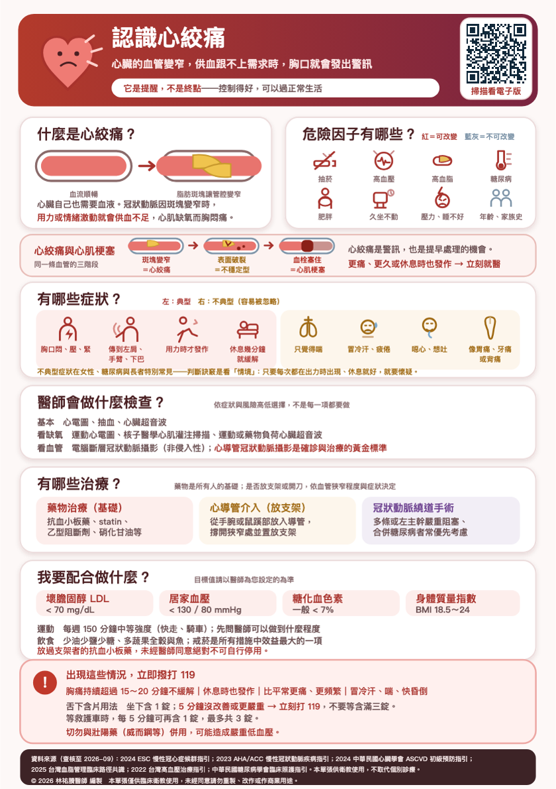

⚠️
危險因子有哪些？
主題 3／11可以改變的有五項。抽菸是最重要的一項，戒菸的效益大過任何一種藥。再來是高血壓，長期讓血管壁承受壓力、加速硬化。第三是高血脂，壞膽固醇是堆成斑塊的主要原料。第四是糖尿病，血糖長期偏高會傷害血管內皮，而且常讓症狀變得不典型。第五是肥胖跟久坐，這一項會同時牽動血壓、血糖跟血脂。
不能改變的有兩項：早發性冠心病的家族史，還有年齡跟性別。男性四十五歲以上、女性五十五歲或停經之後，風險會上升。
不能改變的那些項目，正因為改不了，才更要把能改的控制好。下載原始 A5 衛教單查看原始衛教圖卡

點選圖卡可開啟大圖。原稿來源與說明
資料來源（查核至 2026 年 10 月）：
2024 ESC 慢性冠心症指引；2023 AHA/ACC 慢性冠狀動脈疾病指引；
中華民國心臟學會相關指引；2025 台灣血脂管理臨床路徑共識。本單張供衛教，不取代個別診療。
© 2026 林祐賸醫師 編製 未經同意請勿重製。